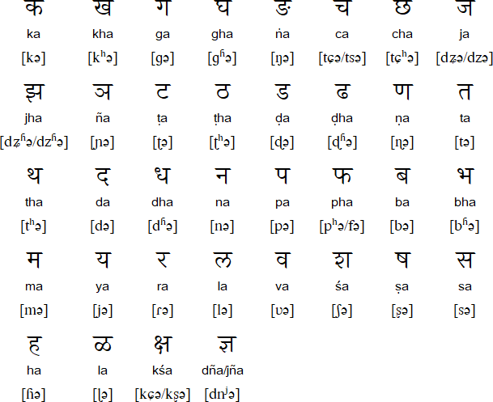

LANGUAGE
Marathi language, Indo-Aryan language of western and central India. Its range extends
from north of Mumbai down the western coast past Goa and eastward across the Deccan; in 1966 it
became the official language of the state of Maharashtra.
